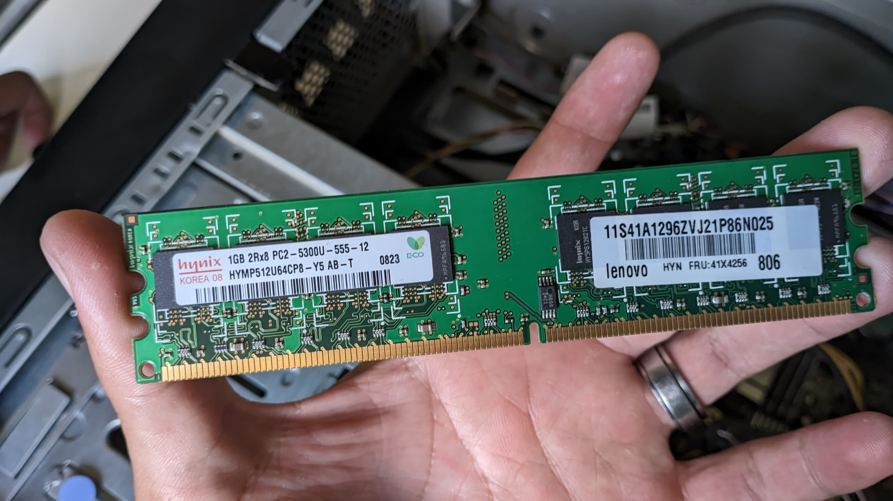
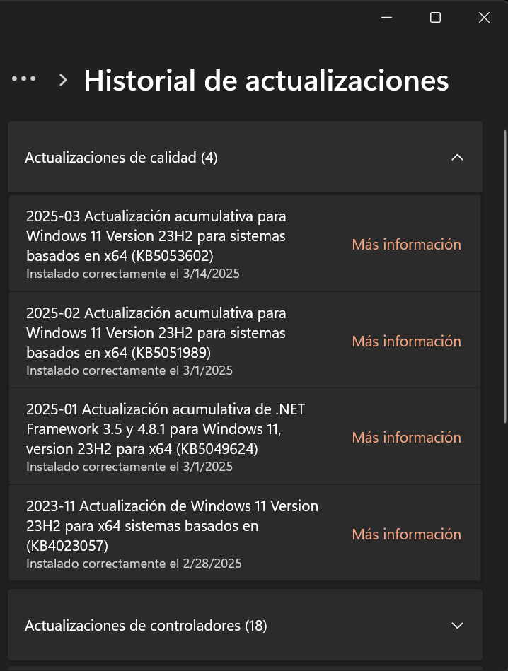

Mantenimiento Preventivo
El concepto específico de este manual es totalmente para la educación y facilitación del mantenimiento del computador tanto preventivo como correctivo, manda información importante a quienes lo leen para que puedan aprender a mantener su computador en buenas condiciones en su hogar, con esto también se refiere que podemos encontrar diversos materiales su forma específica para el mantenimiento del computador.
Mantenimiento Preventivo de Hardware y Software
Introducción
El mantenimiento preventivo es una práctica esencial en el cuidado de los sistemas informáticos, que busca prolongar la vida útil del hardware y asegurar el correcto funcionamiento del software. Este informe detalla las estrategias y procedimientos recomendados para llevar a cabo un mantenimiento preventivo eficaz.
1. Mantenimiento Preventivo de Hardware
El hardware incluye todos los componentes físicos de una computadora, como la CPU, la memoria, los discos duros y los periféricos. El mantenimiento preventivo de hardware se centra en la limpieza, inspección y actualización de los componentes.
1.1. Limpieza de Componentes
- Importancia: La acumulación de polvo puede causar sobrecalentamiento y fallos en el hardware.
- Procedimiento:
- Apagar y desconectar el equipo.
- Utilizar aire comprimido para limpiar el interior de la caja.
- Limpiar los periféricos (teclado, mouse) con soluciones adecuadas.
[Limpieza de hardware]

1.2. Inspección Visual
- Importancia: Detectar problemas físicos antes de que se conviertan en fallos.
- Procedimiento:
- Revisar los cables en busca de desgaste o daños.
- Comprobar conexiones y componentes sueltos.
[Inspección visual]

1.3. Actualización de Componentes
- Importancia: Mantener el hardware actualizado mejora el rendimiento.
- Procedimiento:
- Evaluar la necesidad de actualizar RAM, disco duro o tarjeta gráfica.
- Realizar actualizaciones de firmware si es necesario.
[Actualización de hardware]
2. Mantenimiento Preventivo de Software
El software es el conjunto de programas y sistemas operativos que permiten el funcionamiento del hardware. Su mantenimiento es crucial para evitar fallos y mejorar la eficiencia.
2.1. Actualizaciones Regulares
- Importancia: Las actualizaciones corrigen errores y mejoran la seguridad.
- Procedimiento:
- Configurar actualizaciones automáticas para el sistema operativo y aplicaciones.
- Revisar periódicamente las versiones de software.
[Actualización de software]
2.2. Copias de Seguridad
- Importancia: Proteger datos importantes de pérdidas.
- Procedimiento:
- Implementar un sistema de copias de seguridad programadas.
- Utilizar soluciones de almacenamiento en la nube o discos externos.
[Copias de seguridad]
2.3. Limpieza de Archivos
- Importancia: Eliminar archivos innecesarios mejora el rendimiento del sistema.
- Procedimiento:
- Utilizar herramientas de limpieza de disco para eliminar archivos temporales y cachés.
- Desinstalar programas que no se utilizan.
[Limpieza de archivos]
Conclusión
El mantenimiento preventivo es fundamental para garantizar el buen funcionamiento y la longevidad de los sistemas informáticos. Implementar prácticas regulares de mantenimiento de hardware y software no solo minimiza el riesgo de fallos, sino que también optimiza el rendimiento general del equipo.
Recomendaciones Finales:
- Establecer un calendario de mantenimiento.
- Capacitar al personal en prácticas de mantenimiento.
- Evaluar el estado del hardware y software de manera periódica.